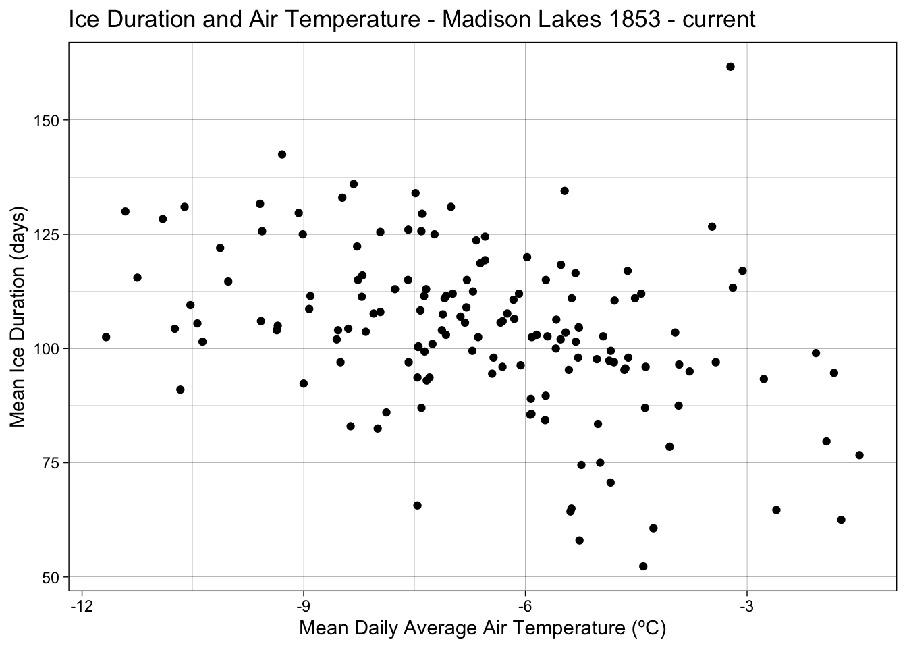

Wrap Up
Create a visualization that compares ice duration across different lakes in the Madison Lake Area. Include both the actual ice duration values and some representation of summary statistics for each lake. Careful if you use a boxplot over a jitter or beeswarm - what values might be doubly represented? Can you find an argument that would help you remove those from the boxplot?
| Lake | Mean Ice Duration (days) | Standard Dev. Ice Duration (days) | Count |
|---|---|---|---|
| ME | 102.2061 | 19.60541 | 167 |
| MO | 103.4277 | 19.57621 | 167 |
| WI | 114.2143 | 19.19457 | 97 |
Find the mean ice cover duration in Madison Lake Area by year (i.e., you’ll only be grouping by the year variable here). Understanding check: what are you finding the mean of here? Why are there multiple observations for each year?)
| Year | Mean Ice Duration (days) |
|---|---|
| 1851 | 103.00000 |
| 1852 | NaN |
| 1853 | NaN |
| 1855 | 118.00000 |
| 1856 | 151.00000 |
| 1857 | 120.00000 |
| 1858 | 95.00000 |
| 1859 | 110.50000 |
| 1860 | 123.00000 |
| 1861 | 132.50000 |
| 1862 | 111.50000 |
| 1863 | 128.00000 |
| 1864 | 117.50000 |
| 1865 | 125.00000 |
| 1866 | 125.50000 |
| 1867 | 109.00000 |
| 1868 | 126.50000 |
| 1869 | 134.50000 |
| 1870 | 99.50000 |
| 1871 | 134.00000 |
| 1872 | 142.50000 |
| 1873 | 136.00000 |
| 1874 | 124.50000 |
| 1875 | 91.00000 |
| 1876 | 131.00000 |
| 1877 | 64.66667 |
| 1878 | 113.33333 |
| 1879 | 105.66667 |
| 1880 | 161.66667 |
| 1881 | 85.66667 |
| 1882 | 126.66667 |
| 1883 | 129.66667 |
| 1884 | 128.33333 |
| 1885 | 130.00000 |
| 1886 | 131.00000 |
| 1887 | 131.66667 |
| 1888 | 92.33333 |
| 1889 | 74.50000 |
| 1890 | 112.00000 |
| 1891 | 96.50000 |
| 1892 | 122.33333 |
| 1893 | 104.33333 |
| 1894 | 102.50000 |
| 1895 | 105.00000 |
| 1896 | 116.50000 |
| 1897 | 100.50000 |
| 1898 | 129.50000 |
| 1899 | 111.50000 |
| 1900 | 112.50000 |
| 1901 | 104.00000 |
| 1902 | 87.00000 |
| 1903 | 133.00000 |
| 1904 | 109.50000 |
| 1905 | 106.00000 |
| 1906 | 100.00000 |
| 1907 | 94.50000 |
| 1908 | 112.00000 |
| 1909 | 97.00000 |
| 1910 | 102.00000 |
| 1911 | 110.50000 |
| 1912 | 101.50000 |
| 1913 | 85.50000 |
| 1914 | 115.00000 |
| 1915 | 106.50000 |
| 1916 | 116.00000 |
| 1917 | 115.50000 |
| 1918 | 82.50000 |
| 1919 | 113.00000 |
| 1920 | 83.00000 |
| 1921 | 96.00000 |
| 1922 | 126.00000 |
| 1923 | 103.50000 |
| 1924 | 104.00000 |
| 1925 | 125.00000 |
| 1926 | 102.50000 |
| 1927 | 107.00000 |
| 1928 | 102.66667 |
| 1929 | 105.50000 |
| 1930 | 98.00000 |
| 1931 | 62.50000 |
| 1932 | 111.00000 |
| 1933 | 97.00000 |
| 1934 | 96.00000 |
| 1935 | 104.00000 |
| 1936 | 122.00000 |
| 1937 | 108.00000 |
| 1938 | 106.33333 |
| 1939 | 103.50000 |
| 1940 | 111.50000 |
| 1941 | 83.50000 |
| 1942 | 115.00000 |
| 1943 | 107.50000 |
| 1944 | 95.33333 |
| 1945 | 104.33333 |
| 1946 | 104.50000 |
| 1947 | 106.00000 |
| 1948 | 99.33333 |
| 1949 | 118.33333 |
| 1950 | 125.66667 |
| 1951 | 113.00000 |
| 1952 | 87.00000 |
| 1953 | 78.50000 |
| 1954 | 87.50000 |
| 1955 | 111.50000 |
| 1956 | 101.50000 |
| 1957 | 102.00000 |
| 1958 | 125.50000 |
| 1959 | 103.00000 |
| 1960 | 103.00000 |
| 1961 | 115.00000 |
| 1962 | 111.33333 |
| 1963 | 102.50000 |
| 1964 | 117.00000 |
| 1965 | 65.00000 |
| 1966 | 93.00000 |
| 1967 | 89.00000 |
| 1968 | 110.66667 |
| 1969 | 107.66667 |
| 1970 | 108.33333 |
| 1971 | 112.00000 |
| 1972 | 97.00000 |
| 1973 | 99.50000 |
| 1974 | 111.00000 |
| 1975 | 95.33333 |
| 1976 | 109.00000 |
| 1977 | 125.00000 |
| 1978 | 125.66667 |
| 1979 | 108.66667 |
| 1980 | 93.66667 |
| 1981 | 98.00000 |
| 1982 | 65.66667 |
| 1983 | 111.00000 |
| 1984 | 95.66667 |
| 1985 | 114.66667 |
| 1986 | 96.33333 |
| 1987 | 93.33333 |
| 1988 | 100.33333 |
| 1989 | 101.00000 |
| 1990 | 95.00000 |
| 1991 | 104.66667 |
| 1992 | 117.00000 |
| 1993 | 97.33333 |
| 1994 | 86.00000 |
| 1995 | 120.00000 |
| 1996 | 105.66667 |
| 1997 | 58.00000 |
| 1998 | 76.66667 |
| 1999 | 60.66667 |
| 2000 | 119.33333 |
| 2001 | 52.33333 |
| 2002 | 94.66667 |
| 2003 | 84.33333 |
| 2004 | 102.66667 |
| 2005 | 97.66667 |
| 2006 | 79.66667 |
| 2007 | 118.66667 |
| 2008 | 103.66667 |
| 2009 | 93.66667 |
| 2010 | 115.00000 |
| 2011 | 70.66667 |
| 2012 | 99.00000 |
| 2013 | 123.66667 |
| 2014 | 107.66667 |
| 2015 | 64.33333 |
| 2016 | 75.00000 |
| 2017 | 97.00000 |
| 2018 | 98.00000 |
| 2019 | 89.66667 |
There are multiple observations per year since there are multiple lakes being surveryed.
Create an exploratory visualization of mean ice cover duration by year for the Madison Lake Area. Add a sentence or two below this exploratory graph describing the overall trend(s) you observe.
From 1853 to present there has been a decrease in ice duration for all three of the lakes. Wingera generally has a slightly higher ice duration.
Find the mean air temperature (using the daily average air temperature - adjusted) in Madison Lake Area by year using only observations from winter months (December, January, February)
| Year | Mean Daily Average Air Temperature (ºC) | Count |
|---|---|---|
| 1869 | -5.468889 | 90 |
| 1870 | -6.717778 | 90 |
| 1871 | -7.486667 | 90 |
| 1872 | -9.292308 | 91 |
| 1873 | -8.324444 | 90 |
| 1874 | -6.545556 | 90 |
| 1875 | -10.668889 | 90 |
| 1876 | -7.007692 | 91 |
| 1877 | -2.603333 | 90 |
| 1878 | -3.192222 | 90 |
| 1879 | -6.336667 | 90 |
| 1880 | -3.224176 | 91 |
| 1881 | -5.917778 | 90 |
| 1882 | -3.473333 | 90 |
| 1883 | -9.067778 | 90 |
| 1884 | -10.907692 | 91 |
| 1885 | -11.413333 | 90 |
| 1886 | -10.612222 | 90 |
| 1887 | -9.591111 | 90 |
| 1888 | -9.001099 | 91 |
| 1889 | -5.242222 | 90 |
| 1890 | -4.432222 | 90 |
| 1891 | -3.918889 | 90 |
| 1892 | -8.276923 | 91 |
| 1893 | -10.744444 | 90 |
| 1894 | -5.913333 | 90 |
| 1895 | -9.351111 | 90 |
| 1896 | -5.321978 | 91 |
| 1897 | -7.446667 | 90 |
| 1898 | -7.397778 | 90 |
| 1899 | -8.908889 | 90 |
| 1900 | -6.708889 | 90 |
| 1901 | -8.534444 | 90 |
| 1902 | -7.406667 | 90 |
| 1903 | -8.477778 | 90 |
| 1904 | -10.532967 | 91 |
| 1905 | -9.577778 | 90 |
| 1906 | -5.587778 | 90 |
| 1907 | -6.450000 | 90 |
| 1908 | -6.086813 | 91 |
| 1909 | -7.580000 | 90 |
| 1910 | -8.553333 | 90 |
| 1911 | -4.793333 | 90 |
| 1912 | -10.369231 | 91 |
| 1913 | -5.934444 | 90 |
| 1914 | -8.265556 | 90 |
| 1915 | -6.150000 | 90 |
| 1916 | -8.205495 | 91 |
| 1917 | -11.251111 | 90 |
| 1918 | -7.998889 | 90 |
| 1919 | -7.343333 | 90 |
| 1920 | -8.364835 | 91 |
| 1921 | -4.373333 | 90 |
| 1922 | -7.583333 | 90 |
| 1923 | -5.455556 | 90 |
| 1924 | -9.363736 | 91 |
| 1925 | -7.230000 | 90 |
| 1926 | -6.638889 | 90 |
| 1927 | -6.878889 | 90 |
| 1928 | -4.947253 | 91 |
| 1929 | -10.438889 | 90 |
| 1930 | -6.431111 | 90 |
| 1931 | -1.725556 | 90 |
| 1932 | -4.516483 | 91 |
| 1933 | -4.801111 | 90 |
| 1934 | -6.310000 | 90 |
| 1935 | -7.130000 | 90 |
| 1936 | -10.130769 | 91 |
| 1937 | -7.963333 | 90 |
| 1938 | -5.582222 | 90 |
| 1939 | -3.972222 | 90 |
| 1940 | -7.371429 | 91 |
| 1941 | -5.017778 | 90 |
| 1942 | -7.587778 | 90 |
| 1943 | -7.116667 | 90 |
| 1944 | -5.412088 | 91 |
| 1945 | -8.396667 | 90 |
| 1946 | -5.275556 | 90 |
| 1947 | -6.307778 | 90 |
| 1948 | -7.364835 | 91 |
| 1949 | -5.520000 | 90 |
| 1950 | -7.407778 | 90 |
| 1951 | -7.764444 | 90 |
| 1952 | -4.380220 | 91 |
| 1953 | -4.047778 | 90 |
| 1954 | -3.926667 | 90 |
| 1955 | -7.072222 | 90 |
| 1956 | -5.317582 | 91 |
| 1957 | -5.523333 | 90 |
| 1958 | -7.963333 | 90 |
| 1959 | -7.074444 | 90 |
| 1960 | -5.847253 | 91 |
| 1961 | -5.723333 | 90 |
| 1962 | -8.213333 | 90 |
| 1963 | -11.674444 | 90 |
| 1964 | -4.616484 | 91 |
| 1965 | -5.376667 | 90 |
| 1966 | -7.335556 | 90 |
| 1967 | -5.925556 | 90 |
| 1968 | -6.161538 | 91 |
| 1969 | -6.245556 | 90 |
| 1970 | -7.420000 | 90 |
| 1971 | -6.984444 | 90 |
| 1972 | -8.502198 | 91 |
| 1973 | -4.844444 | 90 |
| 1974 | -5.373333 | 90 |
| 1975 | -4.660000 | 90 |
| 1976 | -6.798901 | 91 |
| 1977 | -9.012222 | 90 |
| 1978 | -9.563333 | 90 |
| 1979 | -8.925556 | 90 |
| 1980 | -7.460440 | 91 |
| 1981 | -5.286667 | 90 |
| 1982 | -7.461111 | 90 |
| 1983 | -7.093333 | 90 |
| 1984 | -4.646154 | 91 |
| 1985 | -10.021111 | 90 |
| 1986 | -6.064444 | 90 |
| 1987 | -2.773333 | 90 |
| 1988 | -7.451648 | 91 |
| 1989 | -7.257778 | 90 |
| 1990 | -3.777778 | 90 |
| 1991 | -5.278889 | 90 |
| 1992 | -3.060440 | 91 |
| 1993 | -4.864444 | 90 |
| 1994 | -7.881111 | 90 |
| 1995 | -5.976667 | 90 |
| 1996 | -6.817582 | 91 |
| 1997 | -5.267778 | 90 |
| 1998 | -1.478889 | 90 |
| 1999 | -4.266667 | 90 |
| 2000 | -6.546154 | 91 |
| 2001 | -4.404444 | 90 |
| 2002 | -1.823333 | 90 |
| 2003 | -5.732222 | 90 |
| 2004 | -5.701099 | 91 |
| 2005 | -5.033333 | 90 |
| 2006 | -1.925556 | 90 |
| 2007 | -6.610000 | 90 |
| 2008 | -8.159341 | 91 |
| 2009 | -7.297778 | 90 |
| 2010 | -6.791111 | 90 |
| 2011 | -4.846667 | 90 |
| 2012 | -2.068132 | 91 |
| 2013 | -6.664444 | 90 |
| 2014 | -8.053333 | 90 |
| 2015 | -5.390000 | 90 |
| 2016 | -4.987912 | 91 |
| 2017 | -3.423333 | 90 |
| 2018 | -4.607778 | 90 |
| 2019 | -5.725556 | 90 |
Create an exploratory visualization of mean winter temperatures for the Madison Lake Area. Add a sentence or two below this exploratory graph describing the overall trend(s) you observe.
Join the mean winter air temperatures to the mean ice cover duration data you found above
Create an exploratory scatterplot of mean winter temperatures versus mean ice duration. Add a sentence or two below this exploratory graph describing the overall trend(s) you observe.

As the mean daily average air temperature increases, the mean ice duration generally decreases.